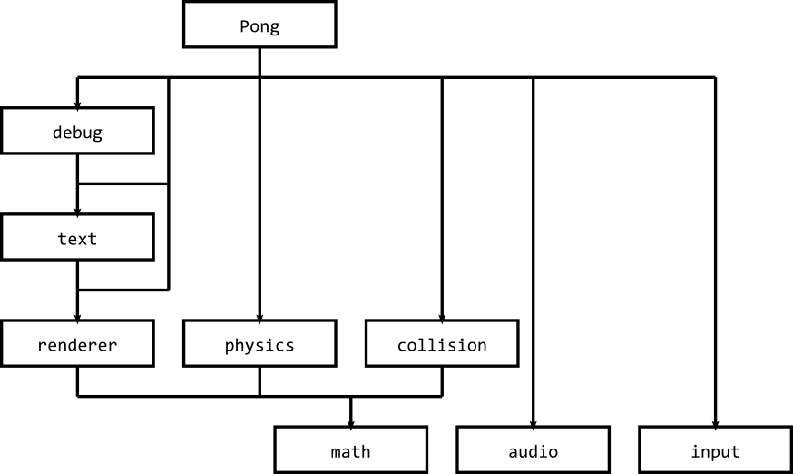

Breaking a project in modules
- taking Pong as an example:
- "physics" i.e. object updates
- collision detection
- "renderer" i.e. sprite drawing
- text drawing
- math functions
- audio output
- input devices
- gameplay rules

Schedules and estimates
- log: tells you how long something took
- estimate: predicts how long something will take
- schedule: lays out when each task can start
- example schedule with 1 resource:
| task | estimated | actual |
|---|
| name | id | depends | resource | start date | start time | end date | end time | start date | start time | end date | end time |
|---|
| design math module | 1 | | paul | 30/03/12 | 9:00 | 30/03/12 | 13:00 | | | | |
| design audio module | 2 | | paul | 30/03/12 | 14:00 | 30/03/12 | 18:00 | | | | |
| design input module | 3 | | paul | 02/04/12 | 9:00 | 02/04/12 | 13:00 | | | | |
| design renderer module | 4 | 1 | paul | 02/04/12 | 14:00 | 02/04/12 | 18:00 | | | | |
| design physics module | 5 | 1 | paul | 03/04/12 | 9:00 | 03/04/12 | 13:00 | | | | |
| design collision module | 6 | 1 | paul | 03/04/12 | 14:00 | 03/04/12 | 18:00 | | | | |
| design text module | 7 | 4 | paul | 04/04/12 | 9:00 | 04/04/12 | 13:00 | | | | |
| design debug module | 8 | 7 | paul | 04/04/12 | 14:00 | 04/04/12 | 18:00 | | | | |
- example schedule with more resources:
| task | estimated | actual |
|---|
| name | id | depends | resource | start date | start time | end date | end time | start date | start time | end date | end time |
|---|
| design math module | 1 | | paul | 30/03/12 | 9:00 | 30/03/12 | 13:00 | | | | |
| design audio module | 2 | | arkin | 30/03/12 | 9:00 | 30/03/12 | 13:00 | | | | |
| design input module | 3 | | liam | 30/03/12 | 9:00 | 30/03/12 | 13:00 | | | | |
| design renderer module | 4 | 1 | paul | 30/03/12 | 14:00 | 30/03/12 | 18:00 | | | | |
| design physics module | 5 | 1 | arkin | 30/03/12 | 14:00 | 30/03/12 | 18:00 | | | | |
| design collision module | 6 | 1 | liam | 30/03/12 | 14:00 | 30/03/12 | 18:00 | | | | |
| design text module | 7 | 4 | paul | 02/04/12 | 9:00 | 02/04/12 | 13:00 | | | | |
| design debug module | 8 | 7 | paul | 02/04/12 | 14:00 | 02/04/12 | 18:00 | | | | |
Submission format
- demo how to export a package in Unity
- to keep it simple: everything in by next Sunday
Quiz
- retake the quiz from week 1
- link is in the week 1 notes